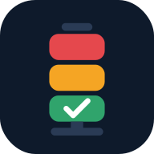

Seyal
Version 1.1.0.5 · 28 Nov 2026
Android phone
Download for Android
Windows PC
Download the Windows installer
It installs Seyal in your own programs folder and puts it on the Desktop. Or paste this in PowerShell:
irm https://download.robolog.co.in/install.ps1 | iex
Zip onlyWhat is new
- Inventory is rebuilt around buying: Home (what needs you, every order stage by stage for founders), Projects, Orders and Store
- Orders go requested, quoted, approved, PO raised, ordered, on the way, arrived, received
- Quotations on a request: supplier, amount, days and file; approving can pick one
- How an order is coming: courier with tracking id, or bus with number, driver and arrival time; a reminder rings before it arrives
- What arrives is checked line by line, by scan or by hand, and goes into the store only on "Add to store"
- A project's BOM can come from an Excel or CSV file
- Scan is the middle button of the Inventory bar; a scanned item offers Take out and Put in directly
- QR label sheets print whole: the bottom row no longer runs off the page